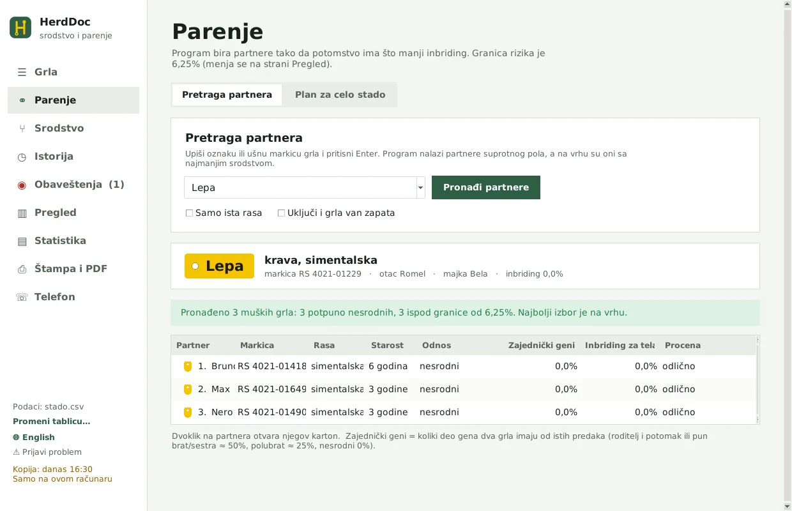

🐑
Jagnjenje na vreme
Spisak ovaca i koza koje treba da se ojagnje ili ojare, sa najranijim i najkasnijim datumom.
U stadu ovaca ili koza lako se izgubi ko je čija majka i od kog ovna. HerdDoc pamti poreklo svakog jagnjeta i jareta, podseća na jagnjenje i upozorava kad bi parenje bilo u srodstvu.
Windows 10/11 + aplikacija za telefon · radi bez interneta · 6 jezika

Ovan ili jarac često ostaje u stadu više godina, a njegove ćerke ostaju za priplod. Bez evidencije se brzo desi da se otac pari sa ćerkom ili brat sa sestrom. Posledica je inbriding: slabija jagnjad, manja plodnost i više uginuća. HerdDoc to vidi pre parenja i predlaže partnere koji nisu u srodstvu.
Spisak ovaca i koza koje treba da se ojagnje ili ojare, sa najranijim i najkasnijim datumom.
Za svaku ovcu ovnovi koji su joj najmanje srodni i očekivani inbriding jagnjeta.
Ocene i rang lista: plodnost iz broja mladih, prirast iz merenja i zdravlje iz lečenja.
Pri upisu jagnjenja upišeš koliko je mladih, i svako dobija svoj karton sa ocem i majkom. Tako kasnije znaš koje ovce redovno donose blizance i od njih zadržavaš žensku jagnjad za priplod.
Telefon radi i tamo gde nema signala. Skeniraš markicu, vidiš karton, upišeš događaj, a sve se usklađuje sa računarom kad se vratiš u domet. Brzu računicu za jednu ovcu ili kozu radi kalkulator jagnjenja i jarenja.
Kod većine rasa ovaca oko 150 dana (145–152). Romanovska ovca se jagnji ranije, oko 140 dana. Datum izračunaj u kalkulatoru.
Prosečno oko 150 dana, obično između 145 i 151 dan.
Vodi poreklo svakog jagnjeta (otac i majka) i pre parenja proveri srodstvo. HerdDoc to radi automatski i predlaže ovna sa najmanjim srodstvom. Više u vodiču Rodoslov i inbriding.
Da. Do 20 grla HerdDoc je besplatan posle 30 dana probe, a paket do 50 grla košta 49 € godišnje.
Posle toga besplatno do 20 grla. Za veća stada od 49 € godišnje.